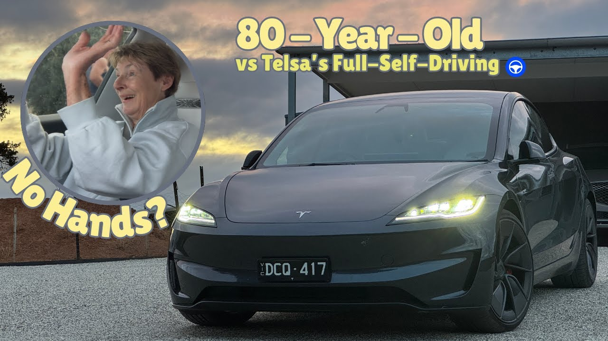
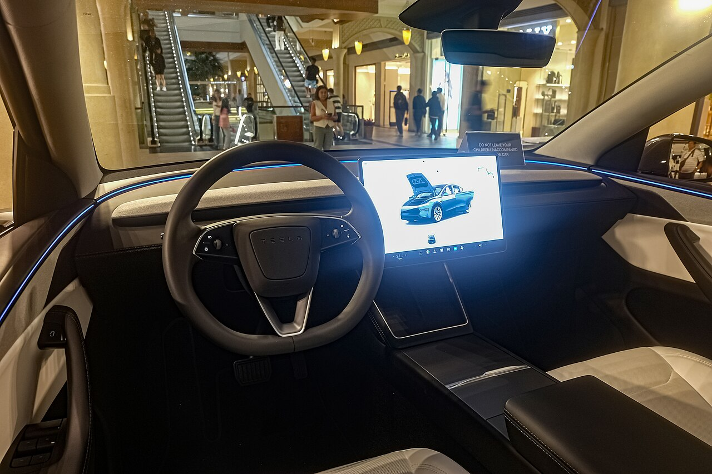
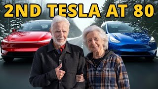
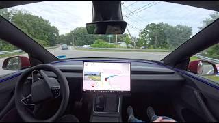
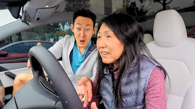
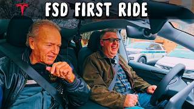
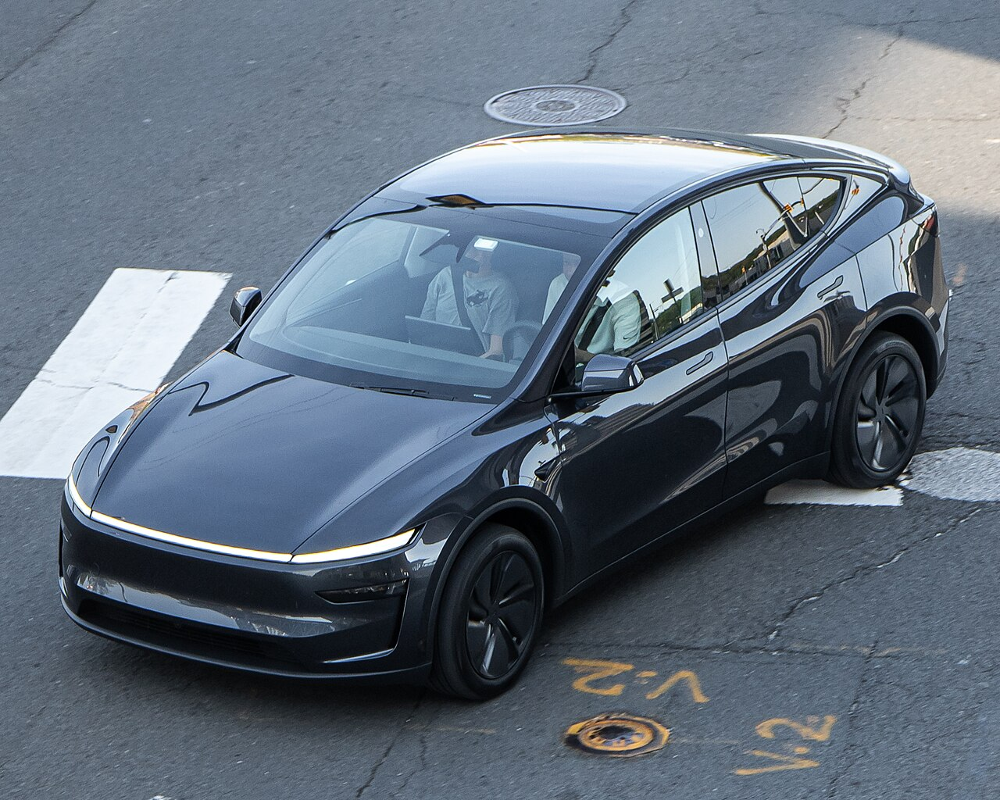

Leonard, age 92
Michigan. From The Detroit News, July 2026.
"I don't think I would be driving without it."
The same news story talks about Dick, age 78, who has used Teslas with this helper since 2019.
For Mom, with love
Mom, you love your freedom. We love that about you. This page is about a car that can do most of the driving while you sit in the driver's seat and watch.

Start here. Watch an 80 year old try it for the first time. She has driven for 60 years. This video was made by a regular family, not by Tesla. Tap to play.It is a Tesla. You tell it where to go. It drives there. You stay in the driver's seat and keep your eyes on the road.
The driving helper is called Full Self-Driving (Supervised). "Supervised" means you are still the boss. The car steers, stops, and turns. You watch, and you can take over any time by turning the wheel or pressing the brake.

These are real drivers from news stories this year and last year. Links to each story are at the bottom of the page.
Leonard, age 92
Michigan. From The Detroit News, July 2026.
"I don't think I would be driving without it."
The same news story talks about Dick, age 78, who has used Teslas with this helper since 2019.
Rico, age 84, and his wife Gail
Virginia. They liked their first Tesla so much they bought a second one.
Rico says the car stops at stop signs and looks both ways for him. He says it keeps him from making silly mistakes. Gail says she feels calm in the car because he is calm. They take long highway trips to the mountains.
A grandmother, age 93
San Diego, California. March 2026.
Her son shared a video of her taking a 13 mile trip by herself in her new Tesla. She got there on time. She called the drive "uneventful," which is just what you want. She still has her driver's license.
A woman, age 80, who has driven for 60 years
She drives an older Subaru. She tried a Tesla for the first time on video.
She was nervous at first. By the end she said it was amazing and that the drive felt natural. One time the car got mixed up while turning around on a dead end street, and the helper in the car stepped in.
A grandfather, age 80
His grandson Steven took him for a ride.
He could not believe you just type in the address and the car takes you there. He kept saying how unreal it was.
Tap a video to play it. None of these were made by Tesla. The first one was made by a car dealer. The rest are regular families and Tesla fans.

This 80 year old couple bought their second TeslaRico and Gail explain why they would not go back.
A 76 year old mom shows it to her 95 year old friendShe takes three friends, ages 74 to 95, for a ride.
My mom tries it after a close callA son takes his mom out after she had a scare on the road. Mom and Dad ride in it for the first timeHonest first reactions from two parents, April 2026.
Grandpa's mind is blownA grandfather watches the car stop at a red light by itself.We think the Model Y is the best fit. The seat is higher, so it is easier to get in and out. It has lots of room for groceries.

| Car | Price | Miles on a full charge | Good to know |
|---|---|---|---|
| Model YOur pick Basic model |
$39,990 | About 320 to 350 | Small SUV. Higher seat. The lowest cost Model Y. |
| Model Y Premium | $45,990 | About 355 | Nicer inside. Goes a little farther. |
| Model Y Premium All-Wheel Drive |
$49,990 | About 327 | All four wheels pull. Best for snow and ice. |
| Model 3 Basic model |
$36,990 | About 321 | Regular car, not an SUV. Sits lower to the ground. The lowest cost Tesla. |
| Model 3 Premium | $42,490 | About 363 | Nicer inside. Goes the farthest. |
The car does the work. You are in charge.
Love, Dan